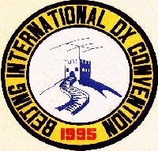
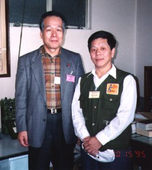
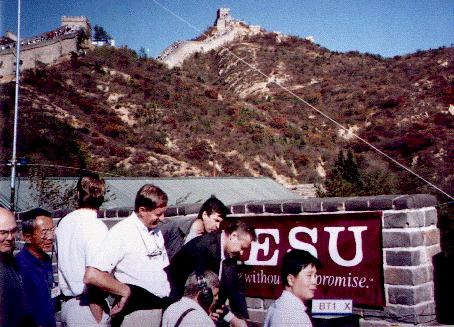
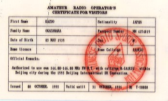
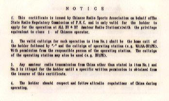

|
中国無線電運動協会（CRSA：Chinese Radio Sports Association）主催により、
中国・北京で初のインターナショナルDXコンベンションが、1995年10月14～15日の2日間、開催されました。 このコンベンションにはアメリカ、カナダ、ドイツ、フインランド、ロシア、韓国、 日本などの外国からの参加を加え、約150名のDXerが集まりました。 とくに、この年の10月1日付けで、DXCCに新たに加えられた、朝鮮民主主義人民共和国（北朝鮮）からも2名の参加がありました。 初日の10月14日は、CRSAのBA1HAM（Chin Ping）、OH2BH（Martti）の司会でミーティングが始まりました。 地元中国のBY1PK（Tong Xiao Yong）をはじめ、各国の代表者が次々に挨拶。 続いて中国のアマチュア無線再開にあたり協力された、カナダのVE7BC（Tom）、 日本からJA1BK（溝口）がスライドを交えて講義を行いました。 午後からは中国人と外国人が２手に分かれ、講演や報告会が行われました。 午後７時、DX-Dinnerが外国人の宿泊ホテルとなった、Catic・Plaza・Hotelで行われました。 この日のバンケットでは、この年の4月に行われた、BS7H（スカボロ・リーフ）のDXペディシヨンの経過報告が、 参加メンバーの一人、KJ4VH（Tim=現N4GN）からありました。 この時点では、まだニューカントリーとして認められていなかった事もあり、スクリーンに映し出される BS7H運用時のスライドと解説に会場の注目が集まりました。 このホテルには、記念局・BT1DXが設置され、世界中にこの日のコンベンションの模様が伝えられました。  BY1PK局でBA1HAM Chin Ping氏(右)とJA1RJU(左)
翌15日は、バスによる万里の長城の見学ツアー。途中、北京市の中心局・BY1PKの見学、 郊外の七宝焼工場の見学などの後、万里の長城に到着。 万里の長城の一角にはコンベンションを記念して、特別局・BT1Xが設置され、参加者による運用が行われました。 運用は約2時間の限られた短い時間でしたが、14MHzのSSBを中心に、初の万里の長城からのサービスが行なわれ ました。 また、今回の参加者全員に、2mの周波数と1カ月の期間限定ながら、アマチュア無線局の運用許可証が交付さ れました。 各国のハムが和気あいあいに過ごした2日間。 中国が1982年にアマチュア無線を再開した当初には、想像もつ かなかった今回の大イベントの成功に、参加した各局は満足顔で帰路に付きました。  万里の長城から運用するBT1X
【中国の免許】 
中国では原則として外国人に個人免許を与える事はありません。
外国人が中国で運用したい時は、中国の局（クラブ局）からゲストオペレーターとして運用する事になります。
この時のコールサインは、自分の本国でのコールサインに、運用する中国の局のコールサインを付ける事になっています。 |